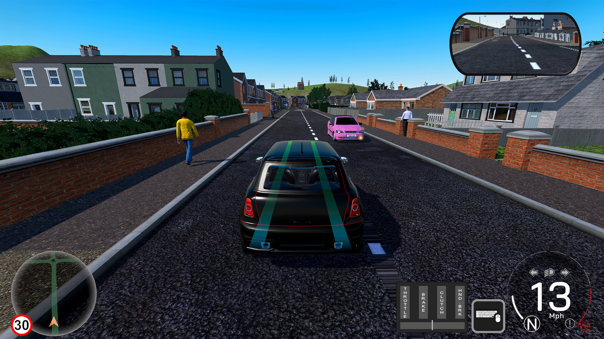
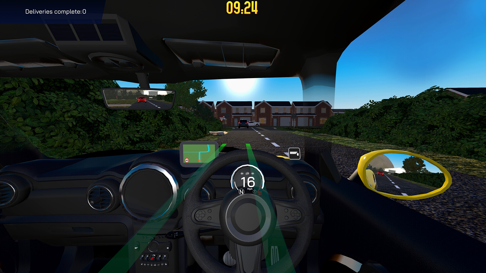
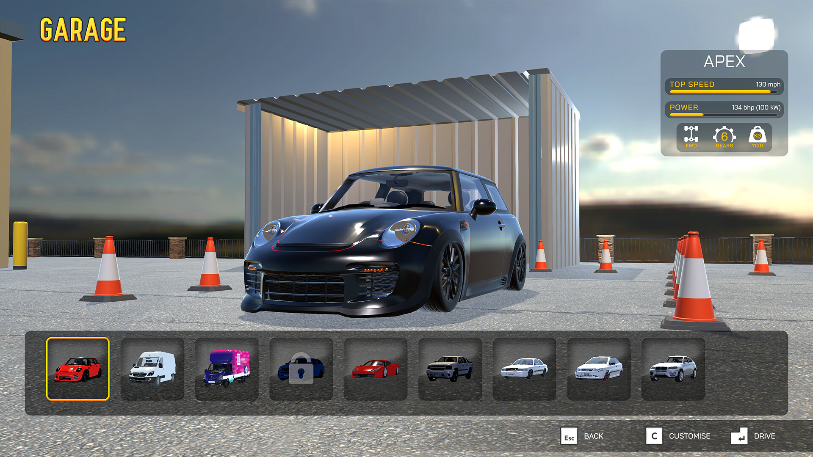
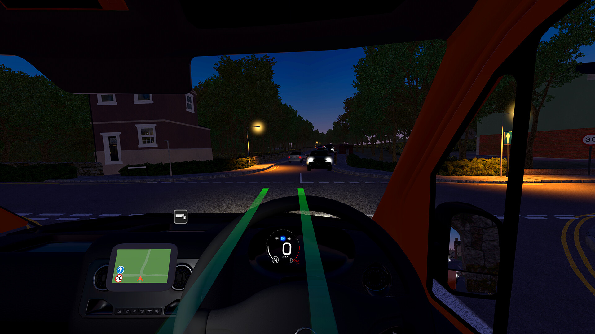
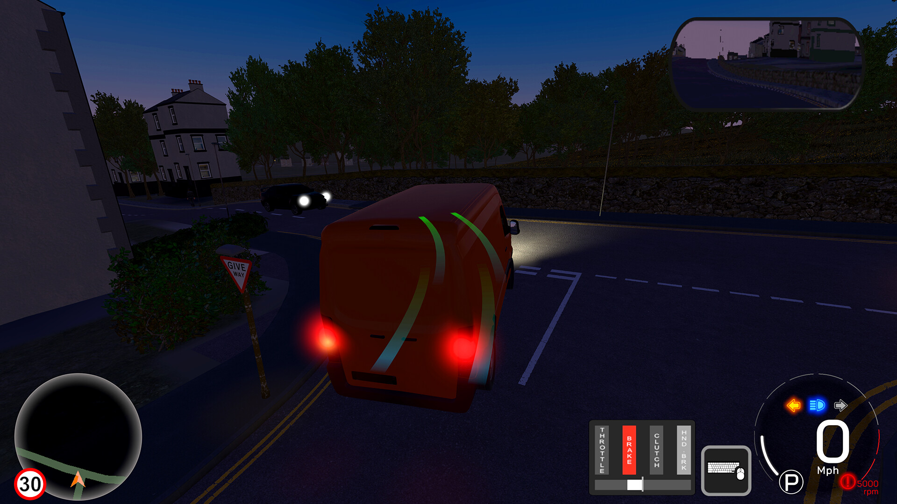
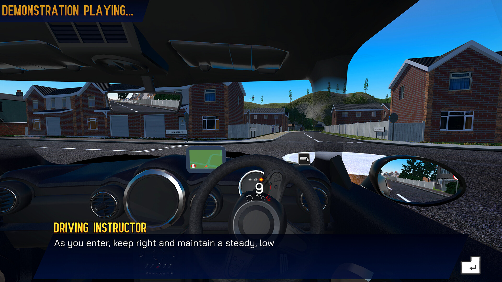
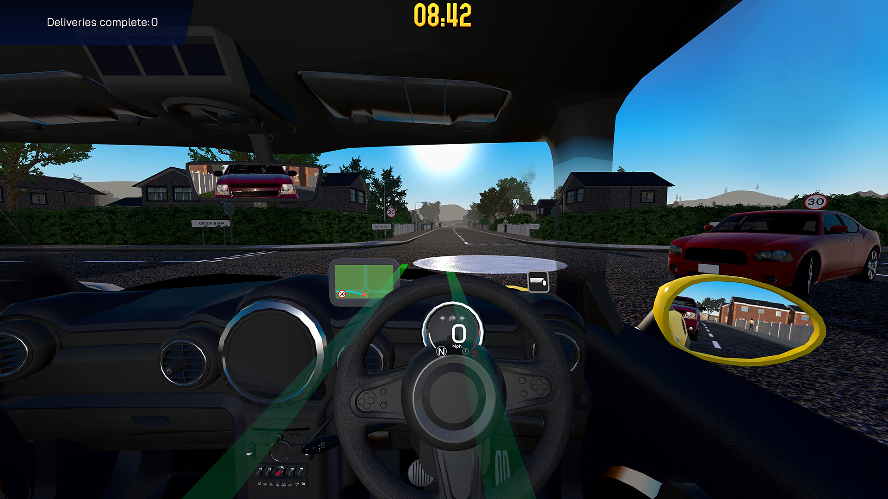
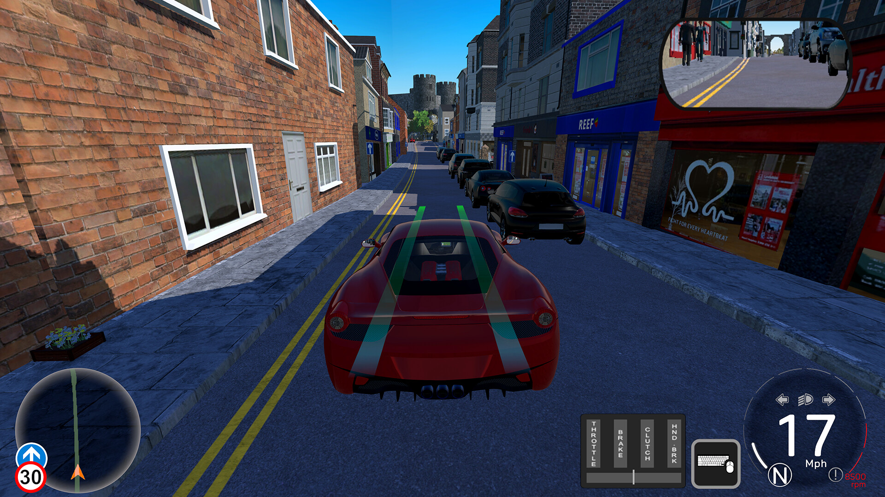

Virtual Driving School
Overview
Virtual Driving School is a long-running driving simulation platform used as the basis for both consumer and bespoke client projects. I have worked extensively on the project throughout my time at CGA, contributing to the underlying simulation as well as individual client projects.
Simulation & AI
Worked on vehicle AI, pedestrian behaviour, collision detection and traffic management. Reworked vehicle AI using behaviour trees to make behaviours easier to extend and maintain, and developed an event-driven traffic light system integrated with the road network to support more complex junction behaviour.
Performance
Profiled and optimised areas of the simulation where performance had become an issue. This included reducing rendering costs from the multiple cameras required for mirrors, navigation and UI by controlling how frequently individual cameras needed to render.
Architecture & Development
Worked within a large, long-running Unity codebase containing interconnected simulation, gameplay and UI systems. Developed reusable systems and tools, including UI functionality and systems for capturing and outputting simulation data.
Leadership
Progressed into a lead role while remaining hands-on with development. Responsible for technical and design decisions, project planning and managing a multidisciplinary team of approximately 10.
Other Simulation Work
Worked on bespoke driving simulations for clients including Scottish Police and Octopus Energy, implementing learning scenarios, simulation functionality and supporting systems.







